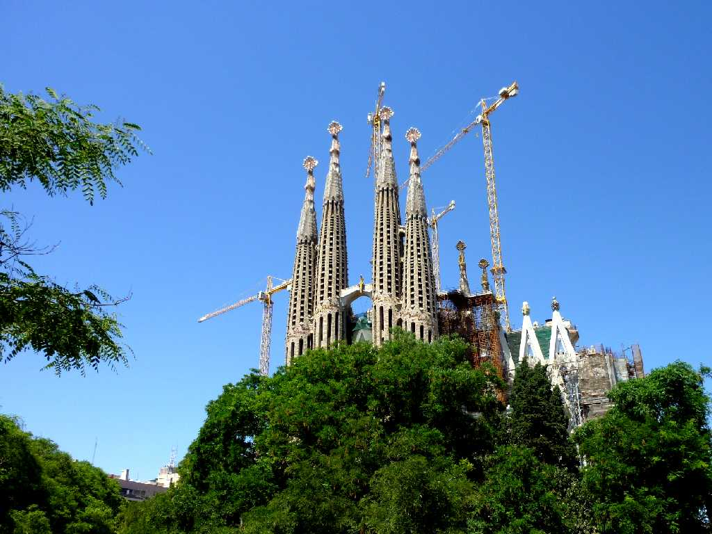
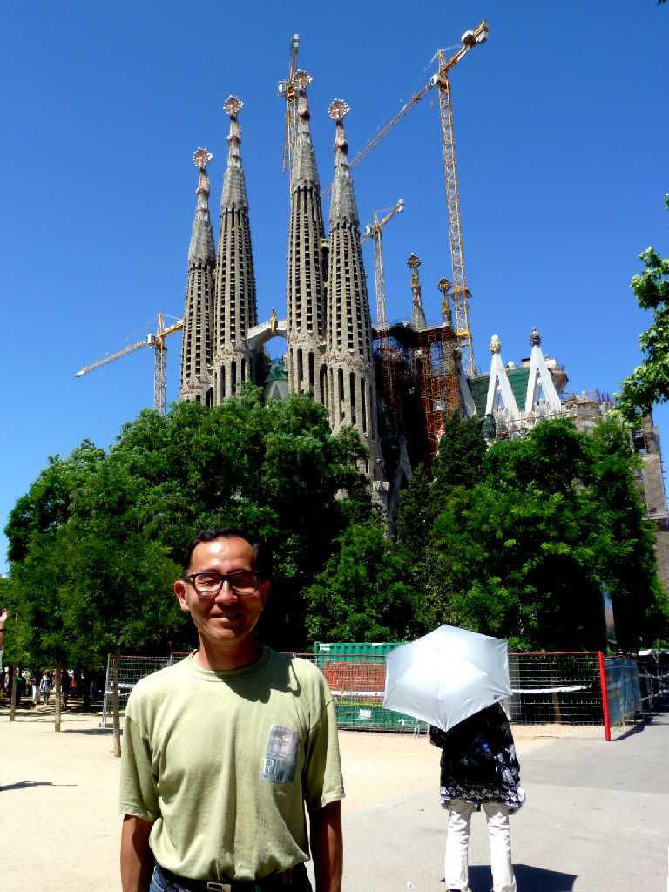
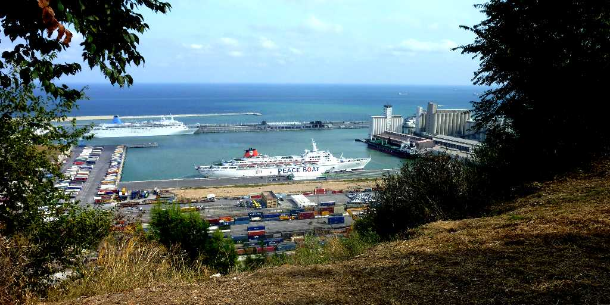
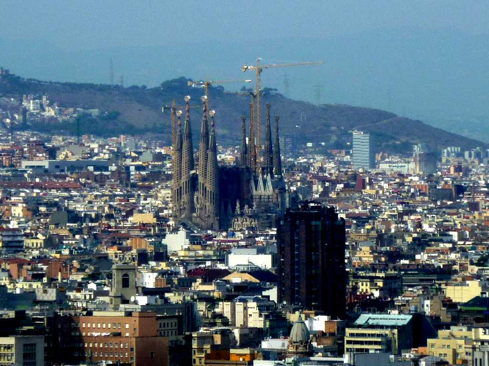

Sagrada Familia Barcelona
バルセロナの顔サクラダファミリア この聖家族教会は貧しい人々のため聖家族に捧げる教会として１８８２年ビリャールが設計着工したが意見の対立から翌年アントニオガウディが引継ぎ１９２６年亡くなるまで設計建築に取り組んだもので死後職人の伝承と大まかな概観のデッサンにより建設が続けられ未だに未完成である

June 5 2010 Sagrada Familia

September 6 2010 View Montjuic Hill SS Oceanic in Barcelona Port
３ヶ月前はバレンシアから鉄路で訪問したが今回は８０日間世界一周クルーズでバルセロナ港から上陸

View Montjuic Hill
モンジュイックの丘から３ヵ月後のパルセロナ市街を望む